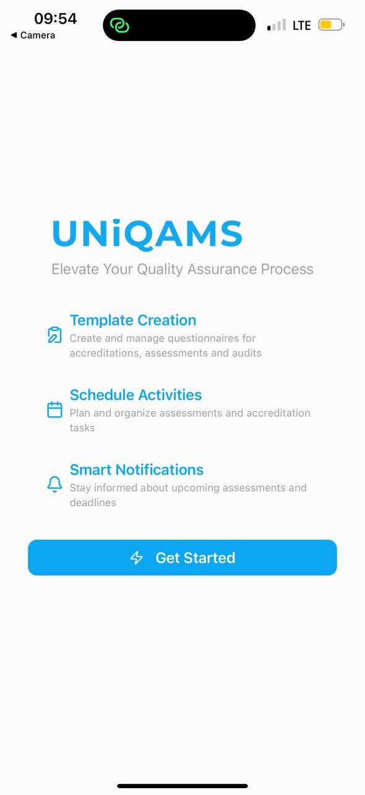

UniQAMS — Sistema de Aseguramiento de la Calidad
Acreditación, evaluaciones y auditorías mediante una app móvil centralizada.
Iniciando MANENTECH…
• Diseñadora UI/UX • Asistente Virtual • Soporte Técnico
Diseñadora UI/UX con formación en Ciencias de la Computación, especializada en diseño digital, soporte técnico y gestión de proyectos. Mi enfoque combina creatividad y tecnología para crear productos digitales que generan impacto real en los usuarios.
Soy María Amparo — Diseñadora UI/UX, Asistente Virtual y Especialista en Soporte Técnico con una base sólida en Ciencias de la Computación. Me apasiona transformar ideas en soluciones digitales funcionales, estéticas y centradas en el usuario.
Cuento con experiencia en diseño web responsivo, resolución de problemas técnicos, y optimización de flujos de trabajo. Además, he trabajado en coordinación de proyectos y comunicación organizacional, lo que me permite adaptarme a equipos multidisciplinarios y entornos dinámicos.
Mi fortaleza está en integrar creatividad, conocimientos técnicos y habilidades organizativas para aportar valor a empresas, instituciones y proyectos innovadores.
A lo largo de mi trayectoria he participado en roles de liderazgo estudiantil y en proyectos colaborativos, donde desarrollé competencias en gestión de equipos, planificación estratégica y toma de decisiones. Estas experiencias fortalecieron mi capacidad para comunicarme de manera efectiva, resolver problemas de forma creativa y trabajar bajo presión.
Estoy especialmente interesada en diseño de experiencias digitales inclusivas, que combinen accesibilidad, innovación y rendimiento. Mi objetivo es seguir creciendo en el campo de la tecnología, aportando soluciones que impacten positivamente en los usuarios y contribuyan al éxito de las organizaciones.
Años de experiencia
Proyectos completados
Roles de Liderazgo
Accra, Ghana • Jun 2023 – 2025
Accra, Ghana • 2024 – 2025
Accra, Ghana • 2023 – 2025
Valley View University • 2022
Malabo, Guinea Ecuatorial • 2018 – Presente
Descarga mis documentos más recientes aquí:
Acreditación, evaluaciones y auditorías mediante una app móvil centralizada.
Sube imágenes y reemplaza colores con vista previa instantánea.
.png)
Una aplicación diseñada para dueños de perros que permite gestionar perfiles de mascotas, historiales de vacunación y datos de salud, además de administrar la información personal del usuario.
Un marketplace digital diseñado para Guinea Ecuatorial, donde los usuarios pueden comprar y vender productos como muebles, ropa, coches y electrónicos.
Automatización de reuniones, recordatorios y flujos de trabajo.
Gestión inteligente de la bandeja de entrada y enrutamiento de tareas.
Sistema de tickets para la satisfacción del cliente.
Automatización confiable de flujos de trabajo repetitivos.
Una colección de certificaciones, premios y reconocimientos que muestran mi experiencia.
.png)
.png)